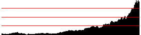
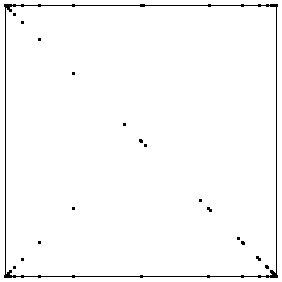

|  |
 |
| Closing prices |
Driven IFS |
|
| The closing prices start
small, and gradually increase, with some fluctuations superimposed. |
| How are we to interpret this driven IFS? |
| * The IFS starts
in the middle, then rapidly runs down toward corner 1 because all the early values
lie in the first bin. |
| * The points along the bottom of the square result from values
hopping back and forth between bins 1 and 2. |
| * The points along the diagonal result from values
hopping back and forth between bins 2 and 3. |
| * The points along the top from values hopping
back and forth between bins 3 and 4. |
| * Note along all the occupied lines, most points cluster
at the corners. This is because many consecutive values do not change bins. |
| This driven IFS tells us nothing that is not apparent from the closing price graph. |